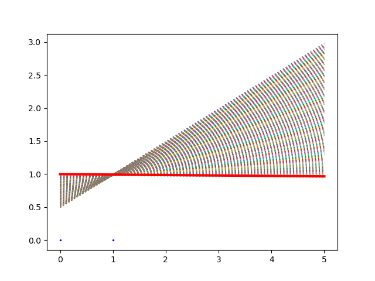
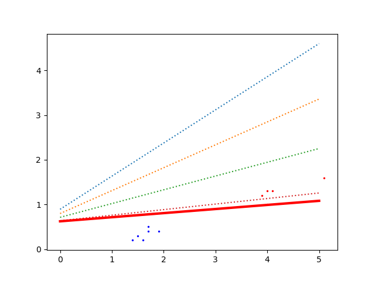
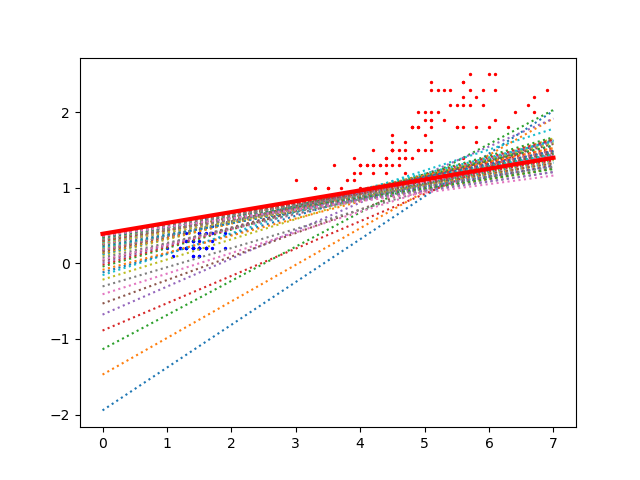

On donne quelques éléments de correction concernant ce TP.
Dans ce TP, on applique la descente de gradient stochastique pour calculer les poids d'un perceptron.
Comme en cours, on considère un perceptron réel à sortie binaire : sa sortie vaut 1 si l'activation du perceptron est positive ou nulle, elle vaut 0 sinon.
Comme on l'a vu en cours, pour calculer les poids d'un perceptron, le principe de la DGS est le suivant :
Écrire le programme python qui réalise cette DGS. Comme dans le TP 2, on suppose que l'on dispose de deux listes :
À chaque itération du Tant-que, affichez le nombre d'erreurs.
Ce nombre doit décroître au fil des itérations.
Vous pouvez prendre η = 0,01 (ou une autre valeur).
À faire :
Comme on l'a vu en cours, les poids d'un perceptron représentent une droite dans le cas où le perceptron a deux entrées (un plan s'il en a 3, etc).
Dans le cas où il y a deux entrées, on peut réaliser une représentation graphique des exemples, de la droite résultant de la DGS et aussi les droites au fil des itérations.
Pour réaliser une représentation graphique, je vous fournis les quelques lignes de python qui suivent.
import matplotlib.pyplot as plt
def debut_figure (entrées, sorties):
fig, ax = plt.subplots ()
couleurs = []
for i in range (len (sorties)):
if sorties [i] == 1:
couleurs.append ("red")
else:
couleurs.append ("blue")
for i in range (len (sorties)):
ax.scatter (entrées [i] [0], entrées [i] [1], color = couleurs [i], s = 2)
return fig, ax
def ajoute_droite (ax, a, b, c):
x1 = [0, 5]
y1 = [-a/c, -(5*b+a)/c]
ax.plot (x1, y1, linestyle = ":")
def ajoute_dernière_droite (fig, ax, a, b, c):
x1 = [0, 5]
y1 = [-a/c, -(5*b+a)/c]
ax.plot (x1, y1, color = "red", linestyle = "-", linewidth= 3)
fig.show ()
Copiez-les et collez-les au début de votre programme en python. Pas la peine de chercher à comprendre comment elles fonctionnent, on va juste les utiliser dans ce TP. On fait comme cela :
Pour la ET logique, si vous prenez initialement a = b = -1 et c = 2, vous devez obtenir le graphique suivant :

On y voit :
Remarque : sur les ordinateurs en salle de TP, si aucun graphique ne s'affiche, essayer de modifier la fonction ajoute_dernière_droite () en remplaçant fig.show () par plt. show().
Correction : une correction est disponible en suivant ce lien. En exécutant ce programme python, vous devez obtenir exactement la figure ci-dessus.
Les iris constituent un jeu de données célèbre.
L'objectif est ici d'appliquer la DGS sur un sous-ensemble du jeu de données iris.
Pour cela, copiez-collez les entrées et sorties ci-dessous.
Ce sont les longueurs et les largeurs des pétales de 11 iris, soit un sous-ensemble du jeu de données complet qui en comprend 150. Les sorties donnent une information sur l'espèce de l'iris, codée par 0 ou 1.
entrées = [[1.4, 0.2],
[4.0, 1.3],
[1.7, 0.4],
[1.6, 0.2],
[3.9, 1.2],
[5.1, 1.6],
[1.5, 0.3],
[4.0, 1.0],
[1.9, 0.4],
[4.1, 1.3],
[1.7, 0.5]]
sorties = [0, 1, 0, 0, 1, 1, 0, 1, 0, 1, 0]
Si vous prenez a = b = -1 et c = 1, en quelques itérations, vous obtenez cette figure :

Correction : une correction est disponible en suivant ce lien. En exécutant ce programme python, vous devez obtenir exactement la figure ci-dessus.
Prenez d'autres valeurs de poids initiales et refaites une DGS à partir de celles-ci.
Si votre programme fonctionne correctement, vous pouvez le tester sur l'ensemble complet des 150 iris. Pour cela, copiez-collez ces quelques instructions python qui stockent dans entrées et sorties les 150 exemples.
from sklearn import datasets
iris = datasets.load_iris()
entrées = iris.data [:,2:4]
sorties = []
for i in range (len (iris.target)):
if iris.target [i] == 0:
sorties.append (0)
else:
sorties.append (1)
Exécutez la DGS sur ces 150 exemples. En prenant a = 1, b = -3 et c = 0, vous devez obtenir la figure suivante :

Correction : une correction est disponible en suivant ce lien. En exécutant ce programme python, vous devez obtenir exactement la figure ci-dessus.
Chaque iris est en fait décrit par 4 attributs : longueur et largeur des sépales, longueur et largeur des pétales. On peut appliquer la même méthode que ci-dessus en prenant en compte les 4 attributs par un perceptron ayant 4 entrées (+ le biais).
Pour cela, copier-coller les instructions suiavntes :
from sklearn import datasets
iris = datasets.load_iris()
entrées = iris.data [:,[2,3,0,1]]
sorties = []
for i in range (len (iris.target)):
if iris.target [i] == 0:
sorties.append (0)
else:
sorties.append (1)
entrées est maintenant un tableau de 150 iris (lignes) et 4 attributs (colonnes). Vous pouvez appliquer ce qui a été fait plus haut à un perceptron a 4 entrées (+ son biais).
Cette fois-ci, ne faites pas de représentation graphique car les fonctions données plus haut ne sont pas adaptées à ce cas de figure (elles supposent que les données sont décrites par 2 attributs seulement). (Vous pouvez essayer de les modifier pour qu'elles fonctionnent avec 4 attributs. Pour cela, commencez par bien comprendre comment fonctionnent les fonctions que j'ai donné plus haut.)
À la place d'un graphique, vous affichez le nombre d'erreurs commises par le perceptron à chaque itération de la boucle Tant-que de la DGS. Ce nombre doit atteindre 0 dans cet exemple.
D'une manière générale, le perceptron ne peut pas calculer l'étiquette de tous les exemples sans commettre d'erreurs.
Comme il n'est pas facile de savoir à l'avance si un perceptron réussira à calculer correctement la sortie attendue pour tous les exemples, il faut que l'algorithme de calcul des poids fonctionne même lorsqu'il n'arrive pas à ne faire aucune erreur.
Dans le cas où le perceptron ne peut pas calculer la sortie attendue pour tous les exemples, on ne s'arrête plus quand le nombre d'erreurs est nul mais quand ce nombre d'erreurs ne diminue plus.
À faire : modifiez votre programme pour qu'il fonctionne ainsi.
Testez-le sur la fonction logique ou-exclusif.
D'une manière générale, même si le nombre d'erreurs ne diminue pas, les poids continuent d'être modifiés. Aussi, un meilleur critère d'arrêt est plutôt d'itérer la DGS tant que les poids continuent d'être corrigés significativement. On peut donc s'arrêter quand la somme des corrections des poids réalisées dans la boucle Pour est inférieure à un certain seuil (10-3 par exemple).
On reprend le jeu de données des iris avec 2 attributs, mais on l'utilise différemment.
Pour cela, remplacez les lignes indiquées plus haut par celles-ci :
from sklearn import datasets
iris = datasets.load_iris()
entrées = iris.data [:,2:4]
sorties = []
for i in range (len (iris.target)):
if iris.target [i] != 2:
sorties.append (0)
else:
sorties.append (1)
Dans ce cas, les données correspondant aux deux étiquettes sont mélangées, il n'existe pas de droite les séparant correctement.
Si vous avez bien fait ce qu'il faut, votre programme doit s'arrêter alors que le nombre d'erreurs n'est pas nul (mais il est faible) et la droite ne sépare pas parfaitement les points bleus des points rouges.
Correction : une correction est disponible en suivant ce lien. En exécutant ce programme python, vous devez obtenir exactement la figure ci-dessus.
Le source de votre programme doit respecter les points suivants :
Pour finir, vous m'envoyez votre/vos script(s) par email, en mettant votre binôme en cc.